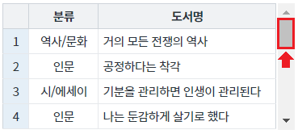

[GridView] Event onscrollstart를 항상 발생 시킬지의 여부 지정하기
1개요
GridView의 이벤트 onscrollstart를 항상 발생 시킬지의 여부를 지정하는 예제입니다. 이 기능은 속성 'alwaysTriggerScrollStart'으로 설정합니다. 설정 값에 따른 기능은 아래와 같습니다. - true : GridView의 세로 스크롤이 최상단에 닿을 때 마다 이벤트 'onscrollstart' 발생. - false : (기본 값) GridView의 세로 스크롤이 최상단에 닿을 때 최초 1회 이벤트 'onscrollstart' 발생.
2구현된 기능
이벤트 'onscrollstart' 최초 1회 발생 시키기
이벤트 'onscrollstart' 매회 발생 시키기
3예제 테스트 방법
3.1이벤트 'onscrollstart' 최초 1회 발생 시키기
- STEP1. 초기 상태 확인하기
영역 [(기본 값) 이벤트 'onscrollstart' 최초 1회 발생 시키기]의 GridView를 확인합니다.
GridView에 세로 스크롤이 있습니다.
[브라우저(Chrome) 실행 예시]
- STEP2. 세로 스크롤을 아래로 이동 시킵니다.
[브라우저(Chrome) 실행 예시 - 스크롤이 아래로 이동된 상태]

- STEP3. 세로 스크롤을 최상단으로 이동 시킵니다.
[브라우저(Chrome) 실행 예시 - 스크롤이 최상단으로 이동된 상태]

- STEP4. 실행 결과를 확인합니다.
세로 스크롤을 최상단 닿으면 onscrollstart 이벤트가 최초 1회 발생되고 이벤트 핸들러가 실행되어 로그가 출력됩니다.
[브라우저(Chrome) 실행 예시 - 로그 확인]
영역 [로그 확인] 또는 브라우저의 개발자 도구의 콘솔(console)탭에 출력된 로그를 확인합니다.

[로그 예시]
[10:25:33] scwin.grd_exam1_onscrollstart
alwaysTriggerScrollStart:false - 최초 1회 발생
-----------------------------------------------------------
STEP2, STEP3을 반복하여 로그를 확인합니다.
로그가 출력되지 않습니다.
3.2이벤트 'onscrollstart' 매회 발생 시키기
- STEP1. 초기 상태 확인하기
영역 [이벤트 'onscrollstart' 매회 발생 시키기]의 GridView를 확인합니다.
GridView에 세로 스크롤이 있습니다.
[브라우저(Chrome) 실행 예시]
- STEP2. 세로 스크롤을 아래로 이동 시킵니다.
[브라우저(Chrome) 실행 예시 - 스크롤이 아래로 이동된 상태]
- STEP3. 세로 스크롤을 최상단으로 이동 시킵니다.
[브라우저(Chrome) 실행 예시 - 스크롤이 최상단으로 이동된 상태]
- STEP4. 실행 결과를 확인합니다.
세로 스크롤을 최상단 닿으면 onscrollstart 이벤트가 발생되고 이벤트 핸들러가 실행되어 로그가 출력됩니다.
(세로 스크롤이 최상단에 닿을 때 마다 이벤트가 발생합니다.)
[브라우저(Chrome) 실행 예시 - 로그 확인]
영역 [로그 확인] 또는 브라우저의 개발자 도구의 콘솔(console)탭에 출력된 로그를 확인합니다.
[로그 예시]
[10:29:01] scwin.grd_exam2_onscrollstart
alwaysTriggerScrollStart:true - 매회 발생
-----------------------------------------------------------
STEP2, STEP3을 반복하여 출력된 로그를 확인합니다.
매회 로그가 출력됩니다.
4구현 예시
이벤트 onscrollstart 설정 방법은 아래의 문서에 작성되어 있습니다.
링크 : [예제 가이드] [GridView] Event - onscrollstart (세로 스크롤이 이동하여 최상단에 닿을 때 발생)
4.1이벤트 'onscrollstart' 매회 발생 시키기
STEP1. GridView의 속성을 정의합니다.
[필수] alwaysTriggerScrollStart="true" //스크롤이 최상단에 위치할 때 마다 onscrollstart이벤트를 발생 시키기
그림 1.웹스퀘어5 SP5 스튜디오의 Property View(속성창) 예시
[소스 코드 예시]
<!-- gridView 의 소스 본문 예시 --> <w2:gridView alwaysTriggerScrollStart="true" dataList="data:dlt_books_1" style="height: 100px;"> <!-- 중략 --> </w2:gridView>
5주요 API
onscrollstart
alwaysTriggerScrollStart
onscrollend
6참고 문서
[웹스퀘어5 SP5 개발 가이드] GridView
링크 : https://docs1.inswave.com/sp5_user_guide/bc10c1b82c9a2a0b#e1c4658baf7e726f
[웹스퀘어5 SP5 개발 가이드] GridView onscrollstart
링크 : https://docs1.inswave.com/sp5_user_guide/86bdcf48029b958b#e1a60f3ca27d3d97
7참고 동영상
GridView onscrollstart
링크 : https://youtu.be/x9bKnWeS3OA